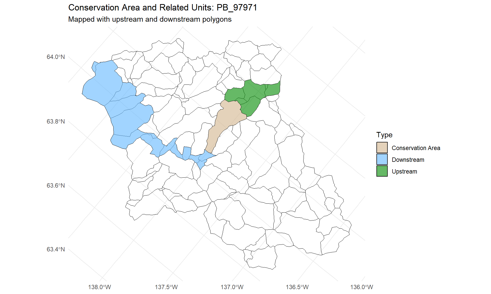

# Load required libraries
library(sf)
library(dplyr)
library(tidyr)
library(utils)
library(ggplot2)
library(RColorBrewer)
library(here)
# --------------------------------------
# SET PARAMS --------------------
# --------------------------------------
# Set working directory
dirpath <- here(".")
# Source BEACONs functions
source(file.path(dirpath,"R/spatial.R"))
source(file.path(dirpath,"R/builder.R"))
source(file.path(dirpath,"R/utils.R"))
# Folder path to the benchmarkbuilder executable
builder_path <- here("builder")
# Set Builder output path (create the folder structure if missing)
builder_dir <- file.path(dirpath, "output/Builder_output")
if (!dir.exists(builder_dir)) {
dir.create(builder_dir)
}
# Create the folder structure to receive output polygons
out_dir <- file.path(dirpath, "output/shp_output")
if (!dir.exists(out_dir)) {
dir.create(out_dir, recursive = TRUE)
}
# Prefix given to identify unique conservation areas
colName <- "PB"
# --------------------------------------
#--RUN
# --------------------------------------
# Use conservation areas as reserve seeds
catchments <- st_read(file.path(dirpath,"data/catchments_sample.shp"))Reading layer `catchments_sample' from data source
`E:\MelinaStuff\BEACONs\git\R_tools_public\data\catchments_sample.shp'
using driver `ESRI Shapefile'
Simple feature collection with 108 features and 15 fields
Geometry type: POLYGON
Dimension: XY
Bounding box: xmin: -2073549 ymin: 752749.6 xmax: -1946333 ymax: 861999.6
Projected CRS: NAD_1983_Albersconservation_areas <- st_read(file.path(dirpath,"data/reserves_sample.shp"))Reading layer `reserves_sample' from data source
`E:\MelinaStuff\BEACONs\git\R_tools_public\data\reserves_sample.shp'
using driver `ESRI Shapefile'
Simple feature collection with 3 features and 2 fields
Geometry type: POLYGON
Dimension: XY
Bounding box: xmin: -2063049 ymin: 815481.9 xmax: -1987393 ymax: 861999.6
Projected CRS: NAD_1983_Albers# Run BUILDER
nghbrs <- neighbours(catchments)
seed <- seeds(catchments, areatarget_value = 100000000)
builder(catchments_sf = catchments, data_source = "catchment", seeds = seed, neighbours = nghbrs, out_dir = builder_dir, builder_local_path = builder_path, catchment_level_intactness = 0.8, conservation_area_intactness = 1, output_upstream = TRUE, output_downstream = TRUE)# A tibble: 4 x 44
PB_94784 PB_95575 PB_95583 PB_95840 PB_95876 PB_95898 PB_95949 PB_96020
<int> <int> <int> <int> <int> <int> <int> <int>
1 94784 95575 95583 95840 95876 95898 95949 96020
2 94837 95831 95831 95831 96075 95629 95840 95949
3 NA NA 95575 NA 97226 NA 95831 95840
4 NA NA NA NA NA NA NA NA
# i 36 more variables: PB_96075 <int>, PB_97226 <int>, PB_97345 <int>,
# PB_97440 <int>, PB_97971 <int>, PB_98263 <int>, PB_98271 <int>,
# PB_98487 <int>, PB_98559 <int>, PB_98569 <int>, PB_98723 <int>,
# PB_98912 <int>, PB_98960 <int>, PB_99037 <int>, PB_99170 <int>,
# PB_99304 <int>, PB_99401 <int>, PB_99409 <int>, PB_99418 <int>,
# PB_99428 <int>, PB_99923 <int>, PB_99941 <int>, PB_100028 <int>,
# PB_100140 <int>, PB_100688 <int>, PB_100869 <int>, PB_100969 <int>, ...#############################################
# Generate potential conservation areas polygons
#############################################
type <- "BENCHMARKS"
out_tab <- fetch_builder_output(builder_dir, type = type)
# Convert builder output tables to polygons
PBx_sf <- dissolve_catchments_from_table(catchments_sf = catchments,
input_table = out_tab,
out_feature_id = colName)
#############################################
# Generate upstream polygons
#############################################
type <- "UPSTREAM"
out_tab <- fetch_builder_output(builder_dir, type = type)
# Convert builder output tables to polygons
upPBx_sf <- dissolve_catchments_from_table(catchments_sf = catchments,
input_table = out_tab,
out_feature_id = colName)
#############################################
# Generate downstream polygons
#############################################
type <- "DOWNSTREAM"
out_tab <- fetch_builder_output(builder_dir, type = type)
# Convert builder output tables to polygons
downPBx_sf <- dissolve_catchments_from_table(catchments_sf = catchments,
input_table = out_tab,
out_feature_id = colName)
# Map example
# Get the first conservation area ID
first_pb_id <- PBx_sf$PB[13]
# Filter all layers for this conservation area
pb1 <- PBx_sf[PBx_sf$PB == first_pb_id, ] %>% mutate(type = "Conservation Area")
up_pb1 <- upPBx_sf[upPBx_sf$PB == first_pb_id, ] %>% mutate(type = "Upstream")
down_pb1 <- downPBx_sf[downPBx_sf$PB == first_pb_id, ] %>% mutate(type = "Downstream")
# Combine layers
overlay_data <- rbind(pb1, up_pb1, down_pb1)
# Plot all layers together
ggplot() +
geom_sf(data = catchments, fill = NA, color = "black", size = 0.2) +
geom_sf(data = overlay_data, aes(fill = type), color = "black", alpha = 0.6) +
scale_fill_manual(
name = "Type",
values = c(
"Conservation Area" = "tan",
"Upstream" = "green4",
"Downstream" = "steelblue1"
)
) +
labs(
title = paste("Conservation Area and Related Units:", first_pb_id),
subtitle = "Mapped with upstream and downstream polygons",
x = NULL, y = NULL
) +
theme_minimal() +
theme(legend.position = "right")
# Save
write_sf(PBx_sf, dsn =file.path(out_dir, "CAs_poly.shp"), append = FALSE)
write_sf(upPBx_sf, dsn =file.path(out_dir, "upstream_poly.shp"), append = FALSE)
write_sf(downPBx_sf, dsn =file.path(out_dir, "downstream_poly.shp"), append = FALSE)